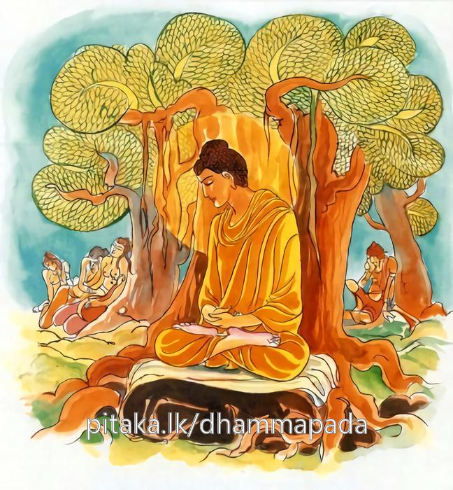
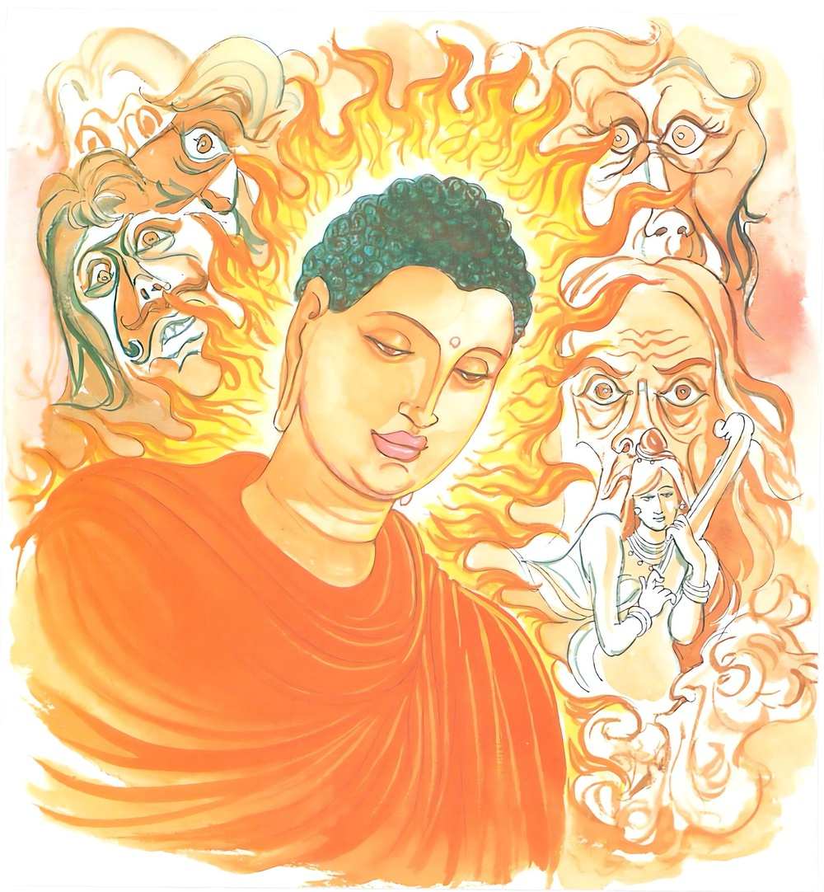

14-1 මාරදූවරුන් පිළිබඳ කථා පුවත
මෙම කතාව සද්ධර්ම සාගරයෙන් ද කියවන්න.
යස්ස ජිතං නාවජීයති ජිතමස්ස නො යාති කොචි ලොකෙ
තම්බුද්ධමනන්තගොචරං අපදං කෙන පදෙන නෙස්සථ.
යමක්හු විසින් දිනන ලද රාගාදි ක්ලේශජාතය (නැවත නොඋපදනා බැවින්) නපුරු කොට දිනන ලද්දේ නම් නො වේ ද (හෙවත් නො දිනුවා නම් නො වේ ද), ඒ බුදුහු විසින් (ඒ ඒ මගින් දිනන ලද) ඒ ක්ලේශජාතය ලොවෙහි එක ද ක්ලේශයෙක් ලුහුබැඳ නො යේ ද, (අනන්තාලම්බන වූ සර්වඥතාඥාන වශයෙන්) අපර්ය්යන්ත වූ ගෝචර ඇති (තුන් භවයෙහි පරිභ්රමණයට කාරණ වූ රාගපදාදීන් අතුරෙන්) එක ද පදයක් නැති ඒ සම්යක්සම්බුද්ධයා කවර පදයෙකින් (කවර කරුණෙකින්) ගෙණ යවු ද? (තොප වශයට පමුණුවවු ද?)

යස්ස ජාලිනී විසත්තිකා තණ්හා නත්ථි කුහිඤ්චි නෙතවෙ
තං බුද්ධමනන්තගොචරං අපදං කෙන පදෙන නෙස්සථ.
(හිවන වළඳනා අරුතින් දැලක් බඳු වන බැවින්) ජාලිනී නම් වූ, (රූපාදි පංචාලම්බනයෙහි ආසක්ත විෂක්ත වන හෙයින්) විසත්තිකා නම් වූ තෘෂ්ණාවෙක් යමකු කිසි භවයකට පමුණුවන්නට නැත්තේ ද, (සර්වඥතාඥාන වශයෙන්) අනන්ත ආලම්බන ඇති භවයෙහි ගමනට කාරණ වූ රාගාදි කිසි ද පයක් නැති ඒ සම්යක්සම්බුද්ධයා කවර පදයෙකින් (වශයට) පමුණුවවු ද?

"යස්ස ජිතං” යන මේ ධර්ම දේශනය ශාස්තෲන් වහන්සේ බෝධි මණ්ඩපයේ වැඩසිටිය දී මාර දූවරුන් ඇරබ පිහිටුවා පසුව කුරු රට මාගන්දිය බ්රාහ්මණයාට පැවසුහ.
කුරු රට මාගන්දිය බ්රාහ්මණයාට මාගන්දි නම් දුවක් සිටියාය. ඕ අතිශය රූප සම්පන්නය. ඇය ප්රාර්ථනා කරමින් නොයෙක් ක්ෂත්රිය - බ්රාහ්මණ මහාසාල කුලවලින් ඔබේ දුවණිය අපට දෙන්නැයි පණිවිඩ යැවූහ. මාගන්දිය බ්රාහ්මණයා ඔබ අපේ දියණියට සුදුසු නොවේ යයි සියල්ලන් ප්රතික්ෂේප කළහ. ඉක්බිති එක් දිනක් තථාගතයන් වහන්සේ ලොව බලන්නේ තමන් වහන්සේගේ ඤාණ ජාලයට මාගන්දිය බ්රාහ්මණයා හා බ්රාහ්මණීය පිවිසුනි. ඒ දෙදෙන මාර්ග ඵලයන්ට පත්වීමේ හේතු සම්පත් දැක්කාහ. බ්රාහ්මණයා ද ගමෙන් පිටත නිරන්තරයෙන් ගිනිදෙවියා පුදයි. බුදුන්වහන්සේ උදයේම පාසිවුරු ගෙන එම ස්ථානයට වැඩම කළහ. බ්රාහ්මණයා බුදුගේ රූපශ්රීය බලා මෙලොව මේ තරම් සමාන පුරුෂයෙක් නම් නැත. මොහු මගේ දුවණියට ඉතා සුදුසු කෙනෙකි. මොහුට මගේ දුවණිය දෙන්නෙමියි සිතා. බුදුරජාණන් වහන්සේට පැවසීය. ශ්රමණය මට එක් දියණියක් සිටී. ඇයට ගැළපෙන පුරුෂයෙක් නොදුටු නිසා ඇය කිසිවෙකුට නො දුන්නෙමි. නුඹනම් ඇයට සුදුසු වේ. මම ඔබට මගේ දුවණිය පාදපරිචාරිකා කොට දෙනු කැමැත්තෙමි. මම ඇයව කැඳවාගෙන එන තුරු මෙහිම සිටින්නැයි පැවසුවේය. බුදුහු ඔහුගේ කථාව අසා සතුටු නොවීය. ප්රතික්ෂේප ද නො කළේය.
බ්රාහ්මණයා ද ගෙට ගොස් බ්රාහ්මණියට කථා කොට පිංවතිය අද මගේ දුවණියට සැබවින්ම සුදුසු පුද්ගලයෙක් දුටුවෙමි. මම ඇය ඔහුට දෙන්නෙමි. දුව අලංකාර ලෙස සරසවා බැමිණිය සමග එතැනට ගියේය. මහජනයා ද කුතුහලෙන් යුතුව නික්මුණි. බුදුරජාණන් වහන්සේ ද බමුණා කීව ස්ථානයේ නොසිට එහි පා සලකුණු තබා අනෙක් තැනෙක වැඩසිටියහ. බුදුවරුන්ගේ පා සටහන - මෙය අසවල් තැනැත්තා දකිවායි අදිටන් කොට තැබුවිට තැබූ තැනම දක්නට ලැබෙයි. අනෙක් තැනක දකින්නේනම් නැත. බ්රාහ්මණයා සමග ගිය බැමිණිය ඒ පුරුෂයා කොහිදැයි විමසුවාය. මෙතැන සිටින්නයි මම ඔහුට කීවෙමි යි බමුණා පැවසීය. කියා බලන අතර පාද සටහන දැක. මේ ඔහුගේ පාසටහන යැයි දැක්වීය. ඇය ලක්ෂණ පාඨ පැවසීමේ දක්ෂ කෙනෙක් නිසා බ්රාහ්මණය මේ පා සලකුණ කාමභෝගී කෙනෙකුගේ නම් නොවන බව කියා සිටිවිට බමුණා හොඳයි වේවා, ඔබ ජලබිඳුවේ කිඹුලන් දකින තැනැත්තියකි. මම ඒ ශ්රමණයාටම දුවණිය දෙන්නෙමියි පැවසූවිට හොඳයි මමත් එය ඉවසන්නම් කී විට බ්රාහ්මණය එසේ කිවත්. මේ පා සටහන නම් නිකෙලෙස් පුද්ගලයෙකුගේ යයි කියා මේ ගාථාව පැවසුවාය.
"රාගී කෙනෙකුගේ පා උක්කුටිකයි. දෘෂ්ටි කෙනෙකුගේ පාසටහන වේගයෙන් තබන ලද්දකි. මුළාවූවෙකුගේ පා සටහන කැඩී ඇත. මේ පාසටහන විවරනොවී මැනවින් පිහිටියේය.
ඉක්බිති බ්රාහ්මණයා - භවතිය - ඝෝෂා නොකරන්න නිහඬව එන්නැයි කියා යන විට තථාගතයන් වහන්සේ දැක මේ ඒ පුරුෂයායි ඇයට පෙන්වා බුදුන් වෙත එළඹ ශ්රමණය මේ දුව ඔබට පෙනෙමි. පැවසුවේය. බුදුහු ඔබේ දුවගෙන් මට වැඩක් නැතැයි නොකියා බමුණ ඔබට එක් කරුණක් කියන්නෙමි. අසන්නැයි පවසා, කියන්න පින්වත අසනෙමියි පැවසුවට අභිනිෂ්ක්රමණයේ සිට අතීත තොරතුරු පෙන්වාදුනි. මේ එම දෙසුමේ. සාරාංශයයි. බෝසතාණන් වහන්සේ රාජශ්රීය අත්හැර දමා කන්ථක අසුපිට නැගී ඡන්න ඇමති සහාය කරගෙන මහබිනික්මන් කරන්නේ නගර දොරටුවේ සිටි මාරයා විසින් "සිද්ධත්ථ නවතින්න. මෙයින් සත්වැනි දවස ඔබට සක්විති රජුට ලැබෙන වක්ර රත්නය පහළ වන්නේ යයි පැවසුවට මාරය මම ඔබ හඳුනමි. මට ඉන් ප්රයෝජනයක් නැතැයි පැවසුවේය. එසේනම් කුමක් සඳහා නික්මෙන්නේදැයි විමසුවිට - සර්වඥතා ඥාණය සඳහායයි පැවසීය. එවිට මාරයා එසේම් අද සිට කාමවිතර්ක ආදී එකම විතර්කය ඇතිකර ගන්නේ නම් ඔබට කළයුතු දේ දනිමි යි පැවසුවේය. මාරයා එතැන් සිට සත් අවුරුද්දක් වරදක් සොයමින් ලුහු බැන්දේය.
තථාගත බෝසතාණන් වහන්සේද? වසර හයක් දුෂ්කර ක්රියාවේ හැසිරි වෙන් වූ පුරුෂයෙකු සේ බෝමැඩ දී සර්වඥතාඥානය අවබෝධ කර විමුක්ති සුවය විඳිමින් පස්වැනි සතියේ අජපල් නුගරුක් මුල වැඩසිටියහ. මාරයා ද මම මෙතෙක් කල් ලුහුබැඳ වරදක් සොයන්නේ මොහුගේ කිසිදු කිළුටක් නොදුටුවෙමි. දැන් මාගේ විෂය අතික්රමණය කර ඇතැයි. දොම්නසට පත්ව මහමග වාඩිවිය. අනතුරුව ඔහුගේ - තණ්හා - රති - රගා - යන මේ දූවරු තිදෙන අපේ පියා දක්නට නැත. මේ වෙලාවේ කොහේ සිටීදැයි බලන්නේ ඔහු එසේ වාඩිවී සිටුනු දැක ළගට පැමිණ පියාණනි කුමක් හෙයින් දුක්ඛිතව දොසින් සිටීදැයි විමසුහ.
ඔහු ඈලාට මේ කරුණු දැක්වීය. ඉක්බිති දූවරු පියාණනි නොසිතන්න. අපි අපේ වසඟයට ගෙන එන්නෙමුයි පැවසුහ. දරුවනි. කළ නොහැකිය. කිසිවෙකුටත් එය කළ නොහැකිය. පියාණනි !අපි ගැහැණුන් වෙමු. දැන් ඔහු රාග පාසයෙන් බැඳ ගෙන්වන්නෙමු යි කීහ. තෙපි නොසිතවු කියා බුදුවෙත එළඹ ස්වාමීනි අපි ඔබ පා පිරිවරමුයි පැවසුහ. බුදුරජාණෝ ඔහුගේ වචන සිහිනොකළහ. ඇස් දල්වා නොබැලුහ. නැවත මාරදූවරු මිනිසුන්ගේ අදහස් උස් පහත් වශයෙන් පවතී. කිසියම් කුමරියකට ප්රේමයක් වේ නම් කෙසේද? පළමු වයසේ (තරුණ වියේ) කෙසේද? මධ්යම වයසේ සිටියදී කෙසේද? පසු වයසේ සිටියදී කෙසේදැයි නොයෙක් ආකාරයෙන් බුදුන් පොළඹවමියි එක් එක් කුමරිය සියය සියය බැගින් ආත්මභාව මවා ගෙන මෙණෙවියන් ලෙස දරුවන් නොවැදූ ළඳුන්ලෙස එක් වරක් දරුවන් ලැබූ කතුන් ලෙසට දෙවරක් වැදුවන් ලෙසම මධ්යම වයසේ ළඳුන් ලෙස වැඩිවියට පත් ළඳුන් ලෙස සිය වතාවක් බුදුවෙත එළඹ ඔබ පා පිරිවරමුයි පැවසුහ. එයද බුදුන් සිහිනොකළහ. යම්සේ අනුත්තර උපධි සංඛ්යාත විමුක්තිය ලබාසිටි හෙයිනි. අනතුරුව බුදුහු මෙතරම් සුන්දර කතුන් කරා නොගිය මට මෙසේ වෑයම් කරමුද? මෙබඳු දේ රාගික අය ඉදිරියේ කිරීම වටී. බුදුවරුන් රාගාදිය ප්රහීණ කළ අයයි. කිනම් කරුණකින් තම වසඟයට ගෙනයන්නැයි පවසා මේ ගාථාව දෙසුහ.
කෙලෙසුන් නසා බුදු බව ලද කෙනෙකු විසින්
දසබිම්බරක් මරු පරදා සිටිති තොසින්
මර දූ වරුන් ආවත් කළඹවන රිසින්
ගෙන යා හැකිද මරු වෙත මට සිලුටු බසින්
.
අරමුණු පිළිබඳව
ආසා දුරින් දුරු කළ
බුදු හිමි කෙනෙකු ලොව
වසඟ වේවිද ඉතිරි රුවකට!
"යම් කෙනෙක් දිනන ලද කෙලෙස් නපුරු කොට දිනන ලද නම් නොවේද ඒ බුදුන් විසින් දිනන ලද ලොව කිසි ක්ලේශයක් අනුව නොයේද අනන්ත ගෝචර ඇති රාගාදි පද රහිත ඒ බුදුන් කවර පදයකින් ගෙනයව්ද?
යම්කෙනෙක් කිසි භවයකට පමුණුවන්නට ජාලිනී නම් වු ද වියත්තිකා නම්වූද තෘෂ්ණාව නොවේද ඒ බුදුන් කවර පදයකින් (රාගආදී) ගෙන යමුද?
"එහි දී යස්ස ජිතං නාවජීයති ” යනු යම් සම්බුදු වරයෙකු ඒ ඒ මාර්ගයෙන් දිනන ලද රාගාදී කෙලෙස් නැවත ඇති නොවන සේ වේද එය නරක දිනීමක් නොවේ. නොයාති - දිනනලද ක්ලේශයන් නොයයි ලුහුබඳින්නේ නැත. අනන්තගොවරං - අනත්තා පරිමාන සර්වඥතාඥාණයට පරිජින්න නොවේ. කෙනපදෙනා - රාගයද ආදී එකදු පදයක් ඇත්නම් එයින් ගෙනයයි. බුදුන්ට එකපදයකුදු නැත. එබඳු පද රහිත බුදුන් කවර පදයකින් තෙපි ගෙනයද? දෙවැනි ගාථාවෙන් තෘෂ්ණාව මසන ලද දැලකට උපමාකරයි. රූපා දී අරමුණුවල වැටෙන හෙයින් විසත්තිකා නම්. විෂබර විෂඵල - විෂමල් ආදියමෙන් පරිභෝග කළ නොහැකි නිසා විසත්තිකා නම් තණ්හායස්ස කුභිඤ්චි එබඳු තෘෂ්ණාව කිසි භවයකට ගෙනයාමට නොහැකිද එබඳු බුදු තොපගේ වසගයට ගෙන යා නොහැකිය.
ධර්ම දේශනය කෙළවර බොහෝ දෙවියන්ට ධර්මාවබෝධය ඇතිවිය. මාරදූවරු අතුරුදහන් වූහ. බුදුහු මේ ධර්ම දේශනය දෙසමින් මාගන්දියාට මම මේ මාර දූවරු දුටුවෙමි. සෙම් ආදී පිළිබෝධ නොවු රන් කඳක් බඳුවු ආත්මභාවයෙන් යුතු වු ආත්මභාවයෙන් යුත් ඒ දුවරු දැක සේවනයට කැමැත්තක් ඇති නොවීය. එහෙත් ඔබගේ දුව - දෙතිස් කුණප ඇති පිටතින් විසිතුරු කැළ අසූචි කළයක් වැන්න. ඉදින් මගේ පයේ අසූචි තැවරේ එහෙයින් දොරටුවේ පාපිස්නක් සේ සිටියද මගේ පයින් හෝ ස්පර්ශ නොකරමියි පවසා මේ ගාථාව පැවසුහ. මාර දුවරු කෙරෙහිත් රාගයක් ඇතිනොවුමට මේ කුණු සිරුර විසින් ස්පර්ශ කිරීමට ද කැමති නොවෙමි. දෙසුම කෙළවර අඹුසැමි දෙපළ අනාගාමී ඵලයේ පිහිටියහ.